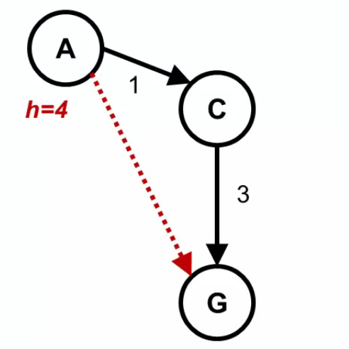

Can someone give me an example of admissible heuristic that is not consistent?
In this figure:
 let's assume that h(C)=1 If f(A)=g(A)+h(A)=0+4=4, and f(C)=g(C)+h(C)=1+1=2 Then f(C) is NOT greater than or equal to f(A) Therefore this example is consistent and admissible, but can someone give me an example of admissible heuristic that is not consistent? please
Answer
- Admissibility
if you want your heuristics to be admissible then you should have that h(n)
<=h*(n) for every node n where h* is the real cost to the goal. In your
case you want:
h(A) <= 4 h(C) <= 3 h(G) <= 0
- Consistency
If you want your heuristics to be consistent then you should have that h(G) =
0 and h(n) <= cost(n, c) + h(c) where the node c is a child of node c.
So in your case
h(A) <= 1 + h(C) h(C) <= 3 + h(G) = 3
If you want inconsistency and since h(C) <= 3 for the admissibility
condition then you should have that h(A) > 1 + h(C). So any heristics that
satisfies:
h(A) > 1 + h(C) h(C) <= 3 h(G) = 0
is admissible and not consistent. You gave
h(A) = 4 h(C) = 1 h(G) = 0
which is a valid candidate.